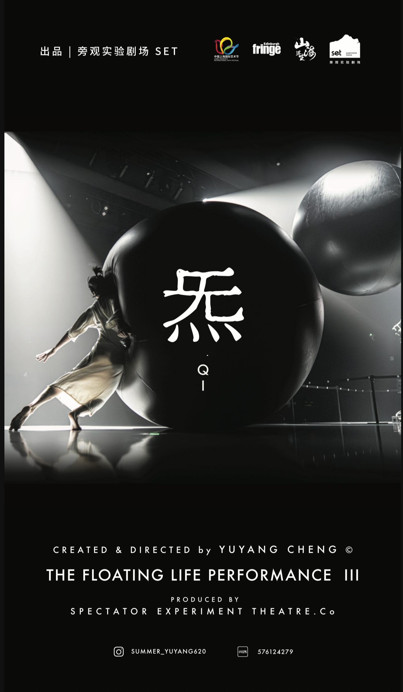
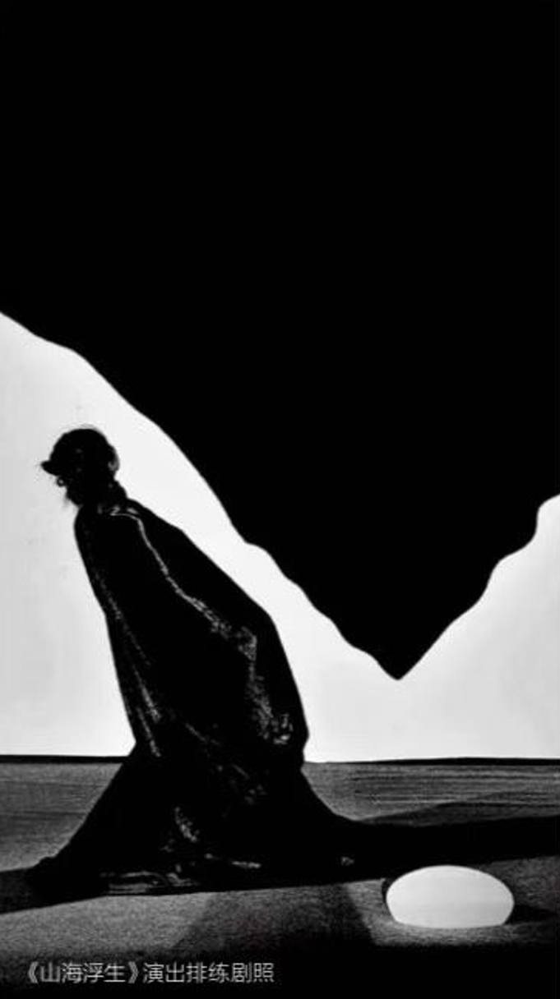
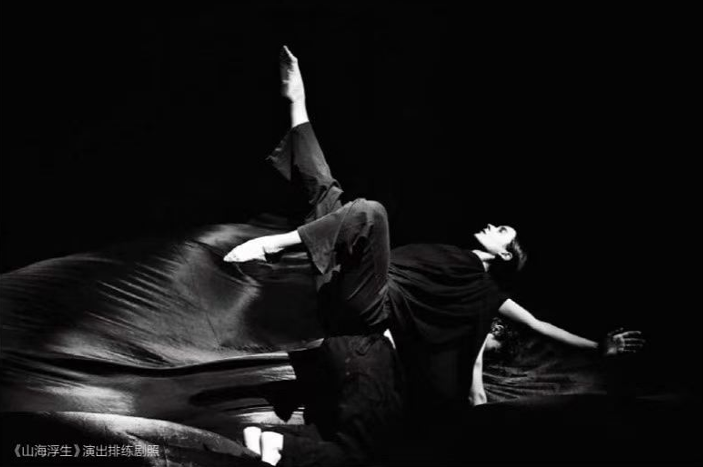
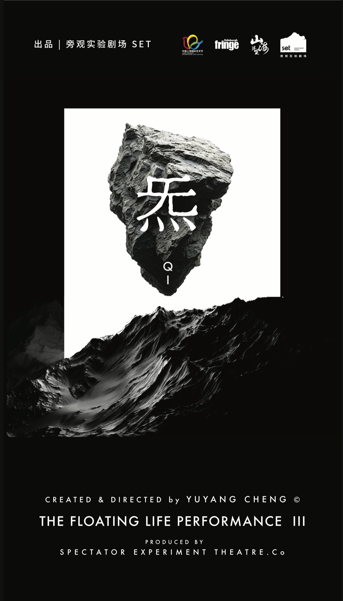

2026 / THE FLOATING LIFE PERFORMANCE III
山海浮生 III
炁 QI
沉浸式实验环境肢体戏剧
XR 数字剧场升级新作

01 / THE WORK
作品简介
《山海浮生 III｜炁 QI》是程雨阳独立编创的沉浸式实验环境肢体戏剧，也是《山海浮生》系列 XR 数字剧场升级新作。
作品以“炁”的流动宇宙观为精神内核：先天一炁，生天生地、生人生物。身体、空间、影像与声音，被视为同一“炁”的分形显现。
技术在这里是感知的延伸。表演者、装置与声场共同构成一个生命场域，让观众通过身体重新理解万物同源、彼此相生的关系。


02 / DIRECTOR
程雨阳
YUYANG CHENG
以身体景观为媒介，将艺术与科技融入东方审美与哲学语境。
她带领 SET Production 探索“在场精神”，把身体、空间、装置与声音放在同一感知系统之中，让技术连接生命经验与精神场域。
03 / BAZAAR ART · NOVEMBER 2025
身体、空间与生命议题的
结构化表达。
《芭莎艺术》×《山海浮生｜八荒祭》
以下为系列前作《八荒祭》的报道与访谈档案，提供《III｜炁 QI》的创作背景。标题按用户提供杂志页识别；不将前作报道标作新作评论。
“我希望空间本身成为叙事。”程雨阳 / 《芭莎艺术》访谈
观看生命的路径
报道将作品的重点放在身体、空间与装置的关系：从个人经验走向更宏观的生命议题，以尺度、光线、材质和观看位置构成舞台方法。
让身体进入空间
访谈谈到建筑的“空间五感”：观众抬头、低头、转身，感知装置、光影与结构变化。空间先带人进入情绪，表演随后发生。
杂志原页 点击放大阅读
2026 / 上海国际艺术节 · PERFORMANCE III
演出信息
10月15日 · 17:00—17:30
交通银行前滩31演艺中心 · 大剧场
融合 / 多媒体剧场
演出信息据项目方提供资料；本页为演出特设 Pop-up 与在线概念演示。
